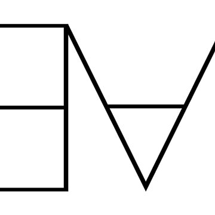

<div id="switch-prover">
  <span class="sentence-switch-prover">The proofs' code is currently in <span id="prover"></span>. To switch to <span id="other-prover"></span>, click on the following icon:</span>
</div>
